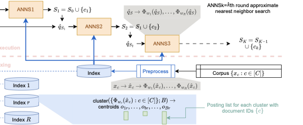
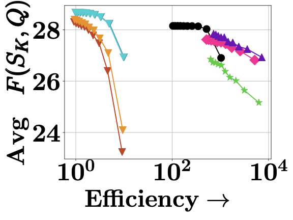
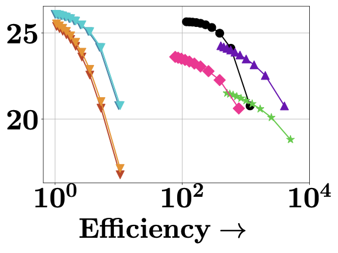
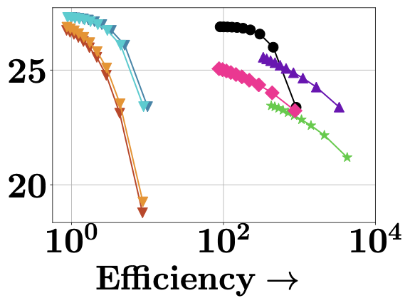
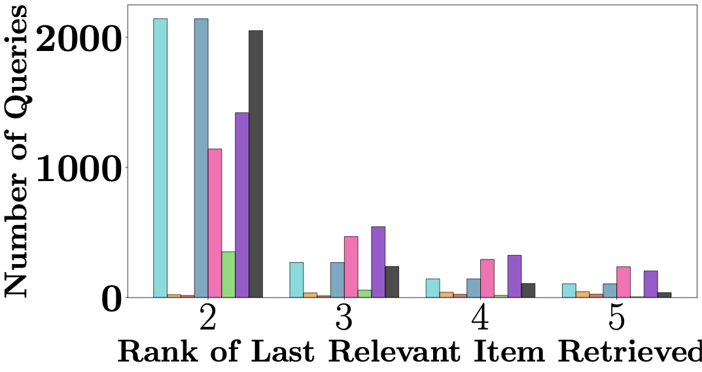

Abstract
In traditional information retrieval (IR), corpus items compete with each other to occupy top ranks in response to a query. In contrast, in many recent retrieval scenarios such as multi-hop question answering (QA), table QA, or text-to-SQL, items are not self-complete: they must instead collaborate, i.e., information from multiple items must be combined to respond to the query. In the context of modern dense retrieval, this need translates into finding a small collection of corpus items whose contextual word vectors collectively cover the contextual word vectors of the query. The central challenge is to retrieve a near-optimal collection of covering items in time that is sublinear in corpus size. By establishing coverage as a submodular objective, we enable successive dense index probes to quickly assemble an item collection that achieves near-optimal coverage. Successive query vectors are iteratively ‘edited’ to account for current coverage, and the dense index is built using random projections of a novel, lifted dense vector space. Beyond rigorous theoretical guarantees, we report on a scalable implementation of this new form of vector database. Extensive experiments establish the empirical success of our method, in terms of the best coverage vs. query latency tradeoffs.
Collaborate, Not Compete
Traditional dense retrieval scores each corpus item independently against a query using late-interaction models like ColBERT, then returns the top-K. The assumption is that each item is self-complete. But in multi-hop QA, table QA, and text-to-SQL, no single item contains the full answer—items must collaborate. Multiple passages need to be combined to respond to the query.
Figure 1. For the query “Birthday of the composer of the film Sruthilayalu”, no single passage is self-complete. Top-K retrieval returns redundant items, while the gold set requires passages that collaboratively cover all query aspects.
Traditional top-K retrieval is fundamentally competitive: items fight for the same top ranks. This leads to redundancy—multiple biographies of the same person, for example—while failing to cover all aspects of a complex query. We reformulate retrieval as a coverage problem: find a small item subset whose token vectors collectively cover the query’s token vectors.
Coverage as a Submodular Objective
We formalize coverage as a facility-location style objective: for a selected set S and query Q, the coverage is F(S, Q) = Σq∈Q maxx∈∪d∈S Dd qTx. Unlike independent top-K retrieval which sums per-document MaxSim scores, this objective gives no additive credit for multiple documents redundantly covering the same query token. It is monotone and submodular—exhibiting diminishing returns—so a greedy algorithm achieves a (1−1/e) ≈ 63% approximation to the optimum.
The challenge: evaluating marginal gains over the full corpus is linear in corpus size. For MS-MARCO (8.8M passages), selecting K=10 items requires 88 million marginal gain computations—prohibitively slow for first-stage retrieval. Existing approaches like stochastic greedy or lazier-than-lazy greedy prune candidates in a query-agnostic manner, leading to poor tradeoffs.
Making the Marginal Gain Index-able
DISCo solves this in two steps:
1. Separating state dependence. We rewrite the marginal gain as an inner product in an augmented “lifted” vector space. The query token y is augmented with its current coverage value: ŷS = [y; F(S,y)] ∈ ℝd+1. The corpus token x is augmented as ◯ = [x; −1] ∈ ℝd+1. The marginal gain then becomes [ŷST◯]+. Crucially, this transfers all dependency on the current set S into the query representation, while the corpus representation ◯ remains static and can be preprocessed once.
2. Handling the hinge with random projections. The [·]+ hinge prevents direct ANN indexing. We resolve this by sampling random hyperplanes w ∼ N(0, Id+1) and defining a feature map Φw(u) = [u; sign(wTu)·u]/√2 such that Φw(u)TΦw(v) = [uTv]+ with probability ≥ 0.5. With R ≥ 8 hyperplanes (for queries with |Q| < 32), the approximation recovers the true marginal gain with probability ≥ 87.5%. The resulting expression closely resembles the standard MaxSim score, making it amenable to indexing.

Figure 2. The DISCo retrieval pipeline. Each greedy step is replaced by an approximate nearest-neighbor search in the lifted space. Each replica index has a token-level IVF, with each token stored as a centroid and quantized residual. Retrieval consists of a token-level IVF lookup followed by progressive levels of candidate reranking.
Results
We compare DISCo against greedy submodular solvers (Exact Greedy, Lazy Greedy, Stochastic Greedy, Lazier-than-Lazy Greedy) and traditional multi-vector retrieval engines (PLAID, MUVERA, WARP) across seven large-scale benchmarks: MS-MARCO (8.8M passages), HotpotQA, FEVER, and four LoTTE domains.
DISCo achieves the best coverage vs. query latency tradeoff—matching greedy baselines in coverage quality while being over 100× faster on MS-MARCO. On HotpotQA with gold set size |Sgold| = 2, DISCo achieves the lowest coverage error (0.59 vs. 0.63 for Exact Greedy and 0.98 for PLAID) and the highest MAP on gold sets (0.84 vs. 0.83 for Exact Greedy and 0.81 for PLAID). Stochastic and lazier-than-lazy variants show poor tradeoffs due to their query-agnostic random pruning.

Figure 3. Coverage vs. latency on MS-MARCO.

Figure 4. Coverage vs. latency on HotpotQA.

Figure 5. Coverage vs. latency on FEVER.

Figure 6. Rank of the last relevant item retrieved on HotpotQA. DISCo retrieves nearly all relevant items within 2–3 rounds, comparable to exact greedy.
BibTeX
@inproceedings{nair2025disco,
title={A Dense Subset Index for Collective Query Coverage},
author={Nair, Kartik and Chakraborty, Pritish and Tambat, Atharva and Roy, Indradyumna and Chakrabarti, Soumen and Dasgupta, Anirban and De, Abir},
booktitle={Proceedings of the International Conference on Learning Representations (ICLR)},
year={2026}
}View: ICLR Poster